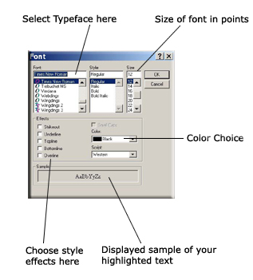

Changing Font and Font Style
To change font settings and styles:
Highlight the text you wish to adjust by dragging the mouse accros the document with the action button depressed.
If you wish to adjust all text on the document, press Ctrl+"A" (Apple+"A" on the Macintosh).
Once the appropriate font is highlighted, choose "Format" from the available menus at the top of AbiWord, then
click on "Font." This dialog box is diplayed:

These settings change the typeface, stlye, size and effects of your font.
Each setting in each area is independent of the others. Expirement with each setting to determin the look of the
font and effect you need.
When you are through with choosing your font settings, click "Ok," or "Cancel" to ignore any changes.